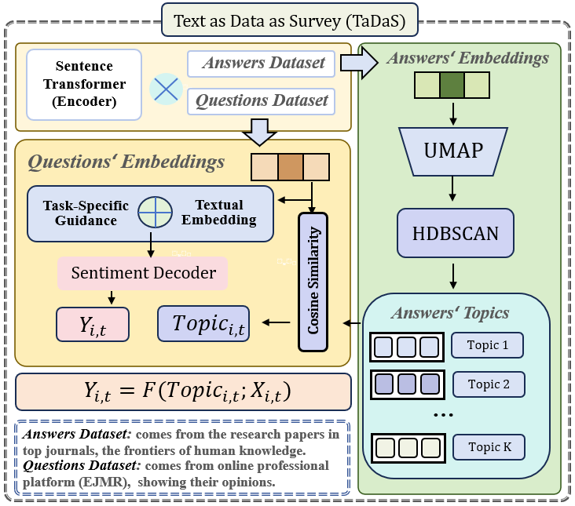
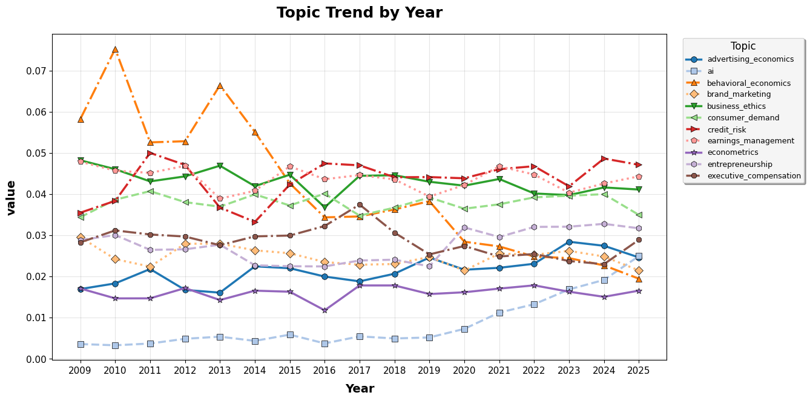
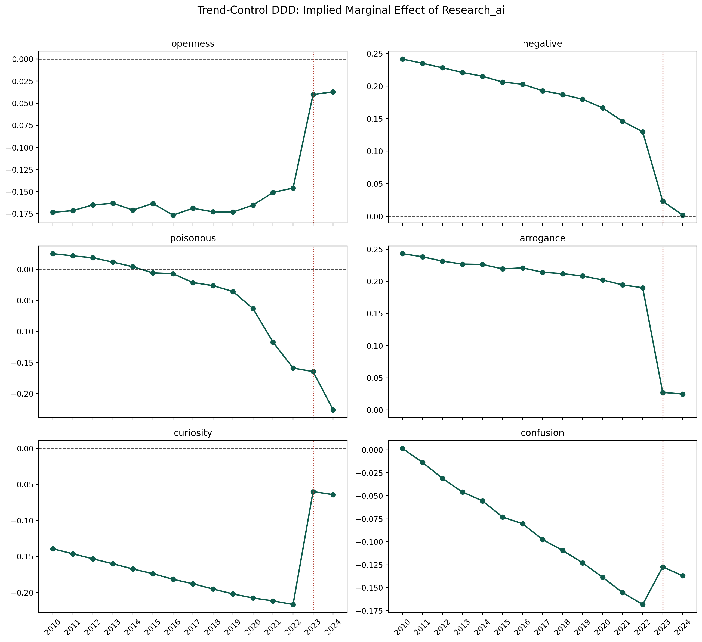

Extract the question space
Screen naturally occurring text into focal and comparison neighborhoods.
Text as Data as Survey
TaDaS turns naturally occurring text into survey-like evidence by linking professional discussion to a labeled research frontier through cross-corpus semantic retrieval.
Method
Traditional surveys are costly, hard to reconstruct retrospectively, and vulnerable to self-presentation bias. Raw internet text is abundant but noisy, weakly structured, and platform-selected.
TaDaS separates the measurement problem into linked corpora. A question corpus supplies the setting where attitudes are observed. An answer corpus supplies labeled semantic directions. Shared embeddings map the first corpus onto the second, producing comparable topic exposures and attitude measures.
Screen naturally occurring text into focal and comparison neighborhoods.
Project unstructured observations onto labeled topic centers.
Measure openness, negativity, toxicity, arrogance, curiosity, and confusion.
Application
Economics Job Market Rumors records naturally occurring professional talk: research discussion, labor-market anxiety, methodological debate, status signaling, and conflict.
Elite economics and finance publications define a stable map of research topics, including the AI trend used as the focal publication-side proxy.
Replies are scored across six dimensions so the project can observe how economists argue, dismiss, defend, and engage when AI-related issues arise.
Figures



Presentation
Read the current TaDaS presentation in your browser or save a copy for later.
Descriptive finding
In the static cross section, AI-related discussion is less open and more negative. In the preferred DDD design, stronger publication-side AI visibility is associated with greater openness and curiosity, and with lower negative tone, poisonousness, arrogance, and confusion.
The interpretation is descriptive rather than causal: legitimacy, practical adaptation, and changing speaker composition are all plausible channels.